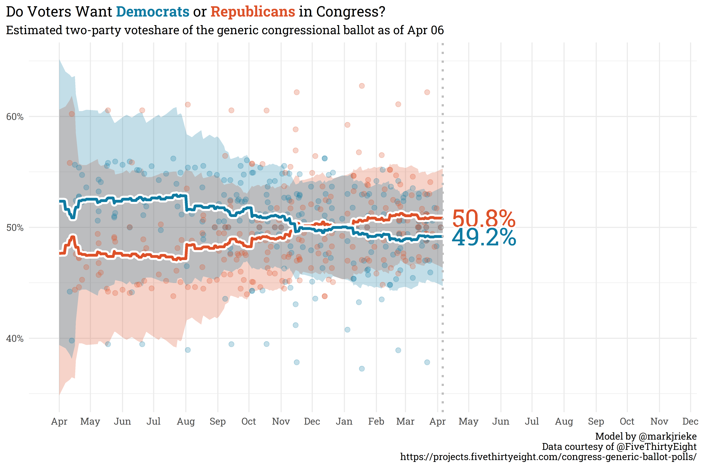

A few months ago, Harrison Lavelle wrote a piece for Split Ticket reviewing the electoral challenges faced by house republicans who voted to impeach Donald Trump for his role in the assault on the capitol. Examining the voting records of these republicans who broke with their colleagues shows, unsurprisingly, that they tend to be more supportive of bills protecting democratic (note — small “d”) norms.
FiveThirtyEight developed a democracy index to evaluate how members of congress vote to protect democratic basics and create a more inclusive democracy (higher scores indicate that the congressman/woman is more supportive of bills protecting/expanding democracy). The linked article is well worth reading and walks through the caveats and limitations of the metric, but, notably, house republicans who voted to impeach Donald Trump are on average more supportive of pro-democracy bills than their colleagues who voted to acquit (on bills through September 1st of last year, the day the article was published).
There are some outliers: Tom Rice (SC-7) voted to impeach Trump but his votes on (small d) democratic bills are in line with the rest of house republicans whereas Brian Fitzpatrick (PA-1) and Tom Reed (NY-23) voted to acquit but have the highest pro-democracy scores by this ranking (there are other republicans who voted to acquit that have democracy scores similar to their colleagues who voted to impeach, but to avoid cluttering the plot, only the mathematical outliers are shown).
There has been very little movement in the generic congressional ballot — republicans are still slightly favored by ~2 points. Biden’s presidential approval rating received a slight bump at the onset of Russia’s invasion of Ukraine, but the marginal gains since then have faded away and he currently sits at a -12.6% net approval.
